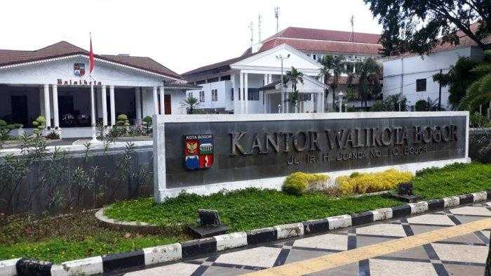
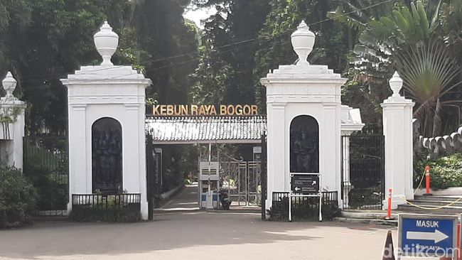

Pengenalan Kota Bogor

Kota Bogor (bahasa Sunda: ᮘᮧᮌᮧᮁ, bahasa Belanda: Buitenzorg) adalah sebuah kota yang terletak di Provinsi Jawa Barat, Indonesia.
Kota ini terletak 59 km di sebelah selatan Jakarta,
dan merupakan enklave Kabupaten Bogor. Pada tahun 2024, jumlah penduduk Kota Bogor sebanyak 1.137.859 jiwa, dengan kepadatan 10.208 jiwa/km².
Kota Bogor dikenal dengan julukan Kota Hujan, karena memiliki curah hujan yang lumayan sangat tinggi.
Kota Bogor terdiri atas 6 kecamatan yang dibagi lagi atas sejumlah 68 kelurahan.
Pada masa Kolonial Hindia Belanda, Kota Bogor dikenal dengan nama Buitenzorg yang berarti tanpa kecemasan atau aman tentram.
Sejarah Kota Bogor

Pada abad ke-14, Bogor dikenal sebagai bagian dari kerajaan Sunda.
Selanjutnya, pada masa kolonial Belanda, kota ini menjadi tempat peristirahatan bagi pejabat Belanda, terutama karena iklimnya yang sejuk.
Belanda membangun Kebun Raya Bogor pada tahun 1817, yang kini menjadi salah satu taman botani terpenting di Asia.
Setelah Indonesia merdeka, Bogor berkembang menjadi pusat pemerintahan dan pendidikan.
Saat ini, kota ini terkenal dengan keindahan alamnya, serta sebagai tujuan wisata yang populer. Bogor juga merupakan rumah bagi sejumlah institusi pendidikan tinggi dan lembaga penelitian.
Wisata Yang ada di Bogor
Kebun Raya Bogor

Kebun Raya Bogor adalah sebuah kebun botani besar yang terletak di Kota Bogor, Indonesia.
Kebun ini dioperasikan oleh Badan Riset dan Inovasi Nasional (BRIN).
Kebun ini terletak di pusat kota Bogor dan bersebelahan dengan kompleks istana kepresidenan Istana Bogor.
Luasnya mencapai 87 hektar dan memiliki 15.000 jenis koleksi pohon dan tumbuhan.
Lapangan Sempur

Lapangan Sempur terletak di seputar Kebun Raya Bogor, tepatnya di sisi bagian utara setelah Jalan Si Jalak Harupat.
Posisi lanskap lapangan ini lebih rendah dari jalan raya sehingga jika sedang diadakan event-event tertentu akan sangat terlihat jelas dari atas jalan.
Namanya berasal dari nama sejenis tumbuhan, sempur.